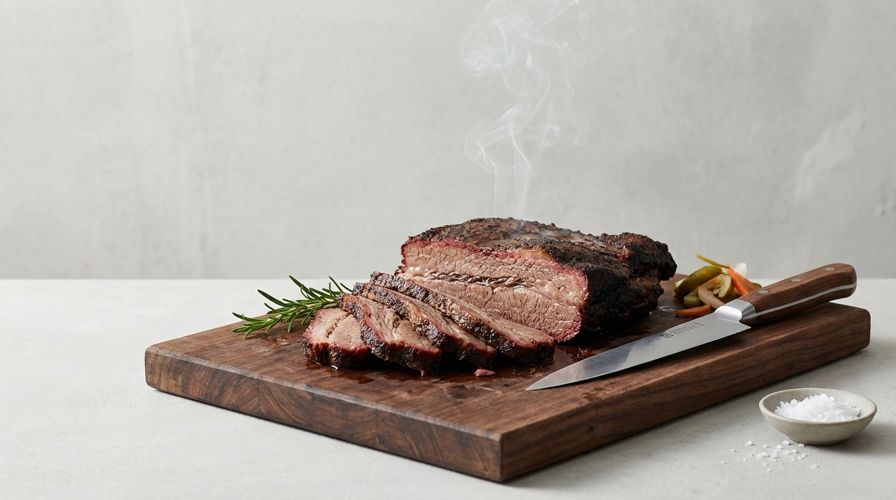

01
브리스킷
BRISKET
겉은 검은 껍질처럼 단단한데, 칼을 대면 속이 무너집니다. 손으로 잡으면 결대로 툭 갈라져요.
CURE 24H · SMOKE 14H · REST 4H
200g 38,000 · 400g 72,000
Seoul · Smoked Meat
42시간을 기다린 고기를 눈앞에서 썰어드리는,
고기 냄새는 나지 않는 고기집.
나무도마에서 슥슥 써는 장면이 이 가게의 심장이라서, 이름을 그렇게 지었습니다.

The Process
훈연을 더 오래 한다고 더 부드러워지지는 않습니다. 14시간을 넘기면 오히려 퍼석해집니다. 칼이 스윽 들어가는 건 훈연 시간이 아니라, 온도를 낮게 오래 유지한 결과입니다.
Why
엄청 큰 고기인데, 칼이 생크림처럼 스윽 들어가서 잘렸습니다. 그리고 그걸 먹은 사람들이 한 번 씹고 놀라는 표정을 지었습니다.
그 표정이 계속 남았는데, 근처에 그런 가게가 없었습니다. 그래서 주변 사람들과 같이 그 맛을 보고 싶어서, 직접 하기로 했습니다.
이 가게가 파는 것은
고기가 아니라
그 표정입니다.
저녁 8시
단골이 지인 한 명을 데리고 들어옵니다. 매번 다른 사람입니다. 주방에 바로 붙은 좌석에 앉아 “훈연스테이크 2인분이요~” 하고 주문합니다.
사장은 훈연해둔 고기를 꺼내 나무도마에 올리고 슥슥 썹니다. 처음 온 사람은 두툼한 크기에 놀라고, 잘리는 게 신기해서 계속 쳐다봅니다.
사장은 별말 하지 않습니다. 야채와 소스를 담아 그냥, 자연스럽게 놓아줍니다. 그리고 딱 한마디.
자, 먹으면 더 놀랍니다~
Space
주방에 바로 붙어 있는 좌석, 조금 떨어진 테이블들. 밝은 회색 시멘트 벽.
눈부실 정도는 아니고, 고기가 잘 보일 만한 적당히 밝은 톤.
고기 굽는 냄새는 나지 않습니다. 은은하고 달큰한 훈연칩 향.
작은 카페 노래 같은 음악, 그리고 적당한 말소리.
굽는 테이블은 연기 흡입이 잘 되어서 냄새가 밖으로 많이 새어나오지 않습니다. 저희가 지향하는 건 오마카세 다이닝 같은, 고급스럽고 깔끔한 고기집입니다.
“이 냄새 뭐예요?”
고기가 녹아내릴
준비하는 냄새요.
Our Rule
고기가 무제한 나오는 것보다,
질 좋은 고기가
저희 가게의 자신감입니다.